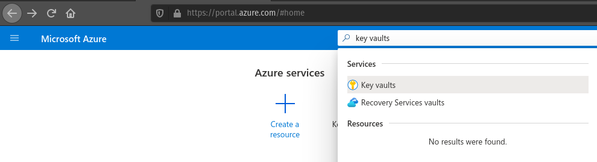
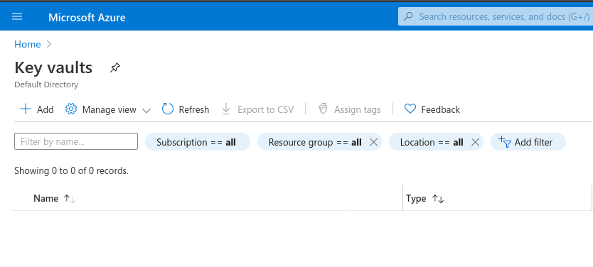
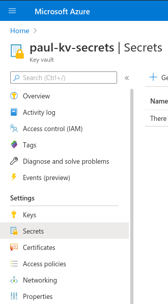

In our walkthrough today, we will be working with a sample application to learn about secrets management. We will use the dotnet user-secrets to manage the secrets on our local machine. When we deploy the application we will be using Azure Key Vault as a remote secrets manager.
To begin this walkthrough, we will each need to fork the project on GitHub. We are each going to have to set up our own unique Key Vault that must be configured in our application settings. First fork this repository to your own GitHub account.
After you fork this project, clone your new repository to your local machine using the command below. Be sure to replace <YOURUSERNAME> with your own GitHub username.
git clone https://github.com/<YOURUSERNAME>/dotnet-user-secrets-az-keyvault
We already know what secrets are and that they are managed by secrets managers, but how do they work?
Locally, in our development environment, we will be using dotnet user-secrets as our secrets manager.
Our local secrets manager is dotnet user-secrets. As you can see from by the command, this is a tool built into the dotnet CLI.
Using the dotnet user-secrets command we can create a secrets store. Each secrets store is unique to a .NET project. A secrets store is a directory on your local machine that the user-secrets manager creates to store your secrets. The secrets store directory is located separately from your project directory, which means there is no chance it will be committed to Git. Once a secrets store has been initialized in a project, you can add and manage secrets using the dotnet user-secrets tool. Secrets are saved as key-value pairs within the secrets store.
There are two commands we will be using:
init: initializes a new secrets store for the projectset: creates, or updates, a secret within the secrets storeTo work with a secrets store you should first navigate to the project directory.
cd dotnet-user-secrets-az-keyvault
dotnet user-secrets init --id walkthrough-secrets
dotnet user-secrets set Name <yourname>
Once you have initialized your project’s secrets store you can create a new secret with set. The set command takes two arguments: the first is the key, and the second is the value. For our project, we will need a secret with a key of Name and a value of your first name.
# make sure to do this within your project directory
dotnet user-secrets set Name <yourname>
You may be wondering how our application will know where to find the secrets store. We must provide our application with the ID of our secrets store for it to be recognized. When we used dotnet user-secrets init, the ID we provided was registered in our api-user-secrets.csproj file automatically.
1 2 3 4 5 6 7 8 9 10 11 12 | <?xml version="1.0" encoding="utf-8"?>
<Project Sdk="Microsoft.NET.Sdk.Web">
<PropertyGroup>
<TargetFramework>netcoreapp3.1</TargetFramework>
<RootNamespace>api_user_secrets</RootNamespace>
<UserSecretsId>walkthrough-secrets</UserSecretsId>
</PropertyGroup>
<ItemGroup>
<PackageReference Include="Microsoft.Azure.KeyVault" Version="3.0.5" />
<PackageReference Include="Microsoft.Extensions.Configuration.AzureKeyVault" Version="3.1.2" />
</ItemGroup>
</Project>
|
It is this entry in the .csproj file that is responsible for integrating our application and our local secrets manager.
Now that our application can access the secrets store, how can our code access specific secrets? Let’s take a look at our Startup.cs file to find out.
1 2 3 4 5 6 7 8 9 10 11 12 13 14 15 16 17 18 19 20 21 22 23 24 25 26 27 28 29 30 31 32 33 34 35 36 37 38 39 40 41 42 43 44 45 46 47 48 49 50 51 52 53 54 55 | using System;
using System.Collections.Generic;
using System.Linq;
using System.Threading.Tasks;
using Microsoft.AspNetCore.Builder;
using Microsoft.AspNetCore.Hosting;
using Microsoft.AspNetCore.HttpsPolicy;
using Microsoft.AspNetCore.Mvc;
using Microsoft.Extensions.Configuration;
using Microsoft.Extensions.DependencyInjection;
using Microsoft.Extensions.Hosting;
using Microsoft.Extensions.Logging;
namespace api_user_secrets
{
public class Startup
{
public static string secret;
public Startup(IConfiguration configuration)
{
Configuration = configuration;
}
public IConfiguration Configuration { get; }
// This method gets called by the runtime. Use this method to add services to the container.
public void ConfigureServices(IServiceCollection services)
{
//accessing the Environment variables that .NET has loaded for us in Configuration
secret = Configuration["Name"];
services.AddSingleton<IConfiguration>(Configuration);
services.AddControllers();
}
// This method gets called by the runtime. Use this method to configure the HTTP request pipeline.
public void Configure(IApplicationBuilder app, IWebHostEnvironment env)
{
if (env.IsDevelopment())
{
app.UseDeveloperExceptionPage();
}
app.UseHttpsRedirection();
app.UseRouting();
app.UseAuthorization();
app.UseEndpoints(endpoints =>
{
endpoints.MapControllers();
});
}
}
}
|
On line 18 we are declaring a new public static field. The public modifier means it’s available to classes outside of the Startup class. The static modifier means an object doesn’t have to be instantiated to access this field. So this Startup.secret field will be available to any of our files.
When a secrets store is registered in a project, its secrets will be automatically loaded into the Configuration object. We can access a specific secret by its key. Line 30 assigns the value of the secret Name to the static field Startup.secret.
This static field allows any of the other files in our project to access the secret’s value.
Where are we actually using our secret? Check out our lone controller file SecretController.cs.
1 2 3 4 5 6 7 8 9 10 11 12 13 14 15 16 17 18 19 20 21 22 23 24 25 26 27 28 | using System;
using System.Collections.Generic;
using System.Linq;
using System.Threading.Tasks;
using Microsoft.AspNetCore.Mvc;
using Microsoft.Extensions.Logging;
namespace api_user_secrets.Controllers
{
[ApiController]
[Route("[controller]")]
public class SecretController : ControllerBase
{
private readonly ILogger<SecretController> _logger;
public SecretController(ILogger<SecretController> logger)
{
_logger = logger;
}
[HttpGet]
public IEnumerable<string> Get()
{
return new string[] { Startup.secret };
}
}
}
|
In our controller file there is one route for HTTP GET request /secret. This handler returns the value of the secret stored in the Startup.secret static field.
In this case, our secret isn’t very sensitive. However, this process is representative of how you can use secrets in a project. Typically your name wouldn’t be considered sensitive data, but many things are sensitive, such as a database connection string that includes a username and password.
It would be a pain to configure dotnet user-secrets for every VM that hosts our project. Microsoft provides us with a more scalable solution for managing secrets called Azure Key Vault.
Azure Key Vault is a cloud-based secrets manager which can be accessed remotely, unlike dotnet user-secrets. Instead of configuring each VM to use their own local secrets manager, we can setup one global secrets manager that any authorized VM can access.
Before we can do this, we need to configure our application to know when to use a local secrets manager and when to use a remote secrets manager.
We want to use our local secrets manager when we are developing our project, but want to use our remote secrets manager when we deploy our application. There are two different environments our application runs in: development (local) and production (remote). We will need to introduce some logic into our application that will allow it to use our local secrets manager when it detects a development environment, while using a remote secrets manager when it detects a production environment.
When you run an application with dotnet run .NET considers it a development environment. When you use dotnet publish and then run the build artifact it .NET considers that a production environment.
The logic for this needs to occur at the entry point of .NET applications, Program.cs.
23 24 25 26 27 28 29 30 31 32 33 34 35 36 37 38 39 40 41 | // if not in Production environment (dotnet run) don't setup KeyVault and use the default Secret Storage managed through dotnet user-secrets
if (!context.HostingEnvironment.IsProduction()) return;
// if in Production environment (dotnet publish) setup KeyVault -- pull the KeyVault name from appsettings.json
var builtConfig = config.Build();
var azureServiceTokenProvider = new AzureServiceTokenProvider();
var keyVaultClient = new KeyVaultClient(
new KeyVaultClient.AuthenticationCallback(
azureServiceTokenProvider.KeyVaultTokenCallback
)
);
config.AddAzureKeyVault(
"https://{builtConfig["KeyVaultName"]}.vault.azure.net/",
keyVaultClient,
new DefaultKeyVaultSecretManager()
);
|
Line 24 is a conditional statement. There are some comments explaining the different logical paths, but essentially the first path is that in a development environment we load the local secrets manager (dotnet user-secrets) by default. In a production environment, we configure and connect to the remote secrets manager (Azure Key Vault).
How does our application know which Key Vault to use?
You may have noticed in Program.cs we are trying to access KeyVaultName from the builtConfig object on line 36. This object loads the key-value pairs from the appsettings.json file.
1 2 3 4 5 6 7 8 9 10 11 | {
"Logging": {
"LogLevel": {
"Default": "Information",
"Microsoft": "Warning",
"Microsoft.Hosting.Lifetime": "Information"
}
},
"AllowedHosts": "*",
"KeyVaultName": ""
}
|
Currently, there is an empty key-value pair with the key KeyVaultName. After we setup an Azure Key Vault we will have to provide its name as the value to this entry.
Let’s run our project locally to see how it works.
From your project directory (/dotnet-user-secrets-az-keyvault) run:
dotnet run
Then navigate to https://localhost:5001/secret.
You should see a line that says <yourname>. This is the value of the secret (Name) we set earlier.
Now let’s set up our remote secrets manager, the Azure Key Vault.
Before we can configure a Key Vault we will need to provision a new resource group.
You should use the following pattern for your resource group Name: yourname-rg-secrets.
Below are images that will remind you how to create a resource group. Refer to previous walkthroughs if you need additional help.
After creating your resource group, move on to the next step.
We will need a VM to deploy our application. So let’s create a new one now.
Make sure to select the correct image, change the Authentication Type to Password, and create a username student and password LaunchCode-@zure1.
As one additional step to previous VM provisioning, we will need to change the System assigned managed identity to On. You will find this option in the Management section of the VM creation wizard.
Enabling System assigned managed identity allows the VM to search for other Azure resources, auch as the Key Vault we will be setting up soon!
Warning
If you didn’t change the Authentication Type to Password and create a User name student, you will run into issues later when trying to perform RunCommands.
If you didn’t change System assigned managed identity from Off to On you will have issues when your VM attempts to access the Key Vault.
After provisioning your VM, move on to the next step.
We need to create our Key Vault and add a secret to it.
Search for the Key Vault blade.
Looking at the main page, we will want to add a new Key Vault. Click the Add button.
This will take you to the Key Vault creation wizard.
Fill out the form with your resource group name yourname-rg-secrets and your Key Vault name. We recommend using a pattern like yourname-kv-secrets.
Note
Key Vault names must be globally unique. This means you may have to try a few different Key Vault names to get it to work.
After completing the form, click Create.
We can now return to our code now that we have our Key Vault name.
Open appsettings.json with your editor of choice and paste in the name of your new Key Vault.
1 2 3 4 5 6 7 8 9 10 11 | {
"Logging": {
"LogLevel": {
"Default": "Information",
"Microsoft": "Warning",
"Microsoft.Hosting.Lifetime": "Information"
}
},
"AllowedHosts": "*",
"KeyVaultName": "paul-kv-secrets"
}
|
Make sure to commit and push these changes up to your repository. We will be cloning this repository into our VM and we need it to have the change we just made so it can access our Key Vault.
By default, the Key Vault blocks all requests for its contents. We will need to grant our VM access to our Key Vault secrets. We will use the VM Identity we assigned earlier to register its access to the Key Vault.
Select your Key Vault.
From here we will need to select Access Policies under the Settings header.

From here we will need to click Add Access Policy to grant our VM permission to access this Key Vault.
This pulls up a new form which we will fill out by selecting the template Secret Management, which will auto-fill out the next boxes. Then we will need to click on None Selected next to Service Principal. This registers our VM Identity as an authorized Service Principal.
You can enter the name of your VM in the search box.
Now to complete the creation of this access policy we just need to hit the Add button. This takes us back to the Access Policy screen and we can see the new policy that was created for our VM.
We have granted our VM access to the secrets contained within our Key Vault.
To add secrets to our Key Vault we need to navigate to the Secrets section under Settings.
Then click the Generate/Import button.
Then fill out the form manually with your key/value pair.
NameyournameClick the Create button to add this secret to your Key Vault.

Our Key Vault is now set up and we can move on to the deployment.
In the Azure portal, navigate to your VM and enter the RunCommand console. As a reminder, this can be found under Operations.
Note
Remember that using RunCommand will take some time, so after you hit Run give it a few minutes. This first RunCommand will take the longest, since it downloads and installs the .NET SDK.
wget https://packages.microsoft.com/config/ubuntu/18.04/packages-microsoft-prod.deb -O packages-microsoft-prod.deb
sudo dpkg -i packages-microsoft-prod.deb
sudo apt-get update; \
sudo apt-get install -y apt-transport-https && \
sudo apt-get update && \
sudo apt-get install -y dotnet-sdk-3.1
export DOTNET_CLI_HOME=/home/student
export HOME=/home/student
dotnet --version
You will know that the SDK installed correctly if you see the version number of the .NET installation. In the following picture, the version is highlighted and is 3.1.301.
Clone your project to your Virtual Machine with the following bash commands in the RunCommand console.
Note
If you forked the repository, your GitHub URL will look something like this https://github.com/<YOURUSERNAME>/dotnet-user-secrets-az-keyvault. Double check that you reference the URL correctly or it won’t work in the Azure RunCommand.
export DOTNET_CLI_HOME=/home/student
export HOME=/home/student
cd /home/student
git clone https://github.com/<YOURUSERNAME>/dotnet-user-secrets-az-keyvault
ls /home/student
You should see a new folder named dotnet-user-secrets-az-keyvault.
To publish, we will need to be in the project directory and run dotnet publish.
export DOTNET_CLI_HOME=/home/student
export HOME=/home/student
cd /home/student/dotnet-user-secrets-az-keyvault
dotnet publish -c Release -r linux-x64 -p:PublishSingleFile=true
export DOTNET_CLI_HOME=/home/student
export HOME=/home/student
cd /home/student/dotnet-user-secrets-az-keyvault
ASPNETCORE_URLS="http://*:80" ./bin/Release/netcoreapp3.1/linux-x64/publish/api-user-secrets
This deploy step will look like it’s stuck if it’s successful because the process attaches itself to the running application, as shown in the picture below.
As a final step, we need to open our Network Security Groups.
From the VM select Networking under the Settings section.
Add new inbound and outbound rules for port 80.
Navigate to http://<YOURVMIP>/secret where you can find your hosted application.
Your running app should look similar to the following picture.